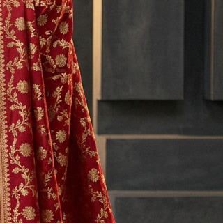

The Four Pillars of the Handloom
Every heirloom requires over 600 artisan hours on traditional wooden drawlooms. Explore the anatomical elements of pure Indian silk craftsmanship.
 01 // TANTU
01 // TANTU
Warp & Weft Synergy
Continuous interlacing of high-twist 20/22 denier mulberry silk yarns yielding unmatched tensile strength and liquid drape.
 02 // SUVARNA
02 // SUVARNA
24k Gold Zari Leaf
Genuine silver ribbon flattened and electroplated with 24-karat gold, wound around pure silk filament for eternal lustre.

03 // AANCHALAanchal Architecture
The grand end-piece spanning 18 to 24 inches of uninterrupted kadhwa brocade, showcasing antique kalga and temple motifs.
 04 // PATLI
04 // PATLI
Sculptural Pleats
Mathematically engineered drape weight ensuring cascading fan pleats retain razor-sharp poise through hours of royal movement.